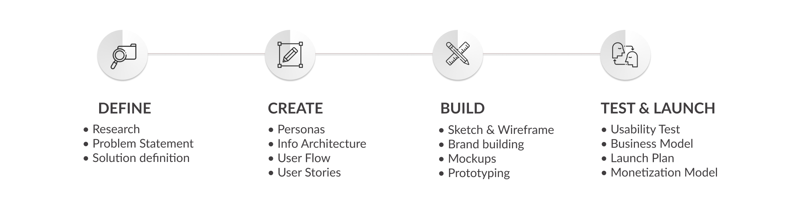

Type
School project
Role
UX Designer & Researcher
Tasks
Define, create, build, test
Length
2.5 months
Objective
Apply design thinking to build an app from scratch
Tools
Photoshop, Illustrator, Figma, After Effect
Our team!
Process
Problem Identification
Our initial idea is to create an app that helps people make quick decision based on community opinions. After presenting the idea and receiving feedback from our peers, we decided to make this app less serious and more fun by focusing on young users whose short attention span tends to let them get bored easily and curious with new things rather than a decision-making app that targets mass audience and requires much more scenarios.
App Research
We used Instagram and TikTok as an inspiration with our design. We wanted the user flow to feel at home for users that were accustomed to IG. The dark theme and infinite scroll was inspired by TikTok. Reddit’s community also inspired us with creating polls and AskReddit style questions/polls.
Problem Statement
A young individual who is curious about people’s opinions, needs the input from a large community to validate her thinking because there are only a few unbiased opinions around her
User Personas
We chose 2 persona types: The Curious Julie and The Skeptical Dave. Curious people tend to be motivated by fun, new things which makes them delay their work; meanwhile skeptics share the same traits in self-insecurity and self-determination.
User Journey
User Story 1: Skeptical Dave asks the community which shoe looks better by uploading 2 images of his options as a poll and wait for the votes from the community
User Story 2: Curious Julie is scrolling the app and finds Dave's poll quite interesting so she decided to help him by clicking on her choice.
Sketch Wireframes
Main Screens Mockups

Test
We picked 3 subjects to perform 3 identical tasks and collected data through quantitative and qualitative research with 3 main types of metrics.
• Quantitative research: % of task completion, time on task (second) and subjective evaluation with rating from 1 to 5.
• Qualitative research was conducted through observation on how they performed the tasks, feedback from the users and their suggestion to improve the app.
Tasks
• Task 1: Find Animal category
• Task 2: Vote on Cat and Dog poll
• Task 3: Create a poll
Metrics
• Task completion rate (%)
• Time on task (seconds)
• Ease to find
Results
All users find the app easy to use with familiar icons that guide them to what they intend to do. One suggests to expand the options to more than 2; one compares pikOne with Instagram and suggests to have photo selected before choosing questions; one wants to customize her own question and suggests to make the “Customize” text more visible and we already fixed it.
Business Model
Regarding Pricing Model, after getting feedback from our peers, we decided not to do the Freemium like we intended to in the beginning because it brings no impactful value when the app is upgraded, and overwhelming our users with Ads is not a wise choice.
We choose to work with corporations and sell user data for them instead. PikOne will be the middle party that collects user data from our users and sell those data to businesses who want to conduct brand awareness survey or social hearing research. This is also our main source of income.